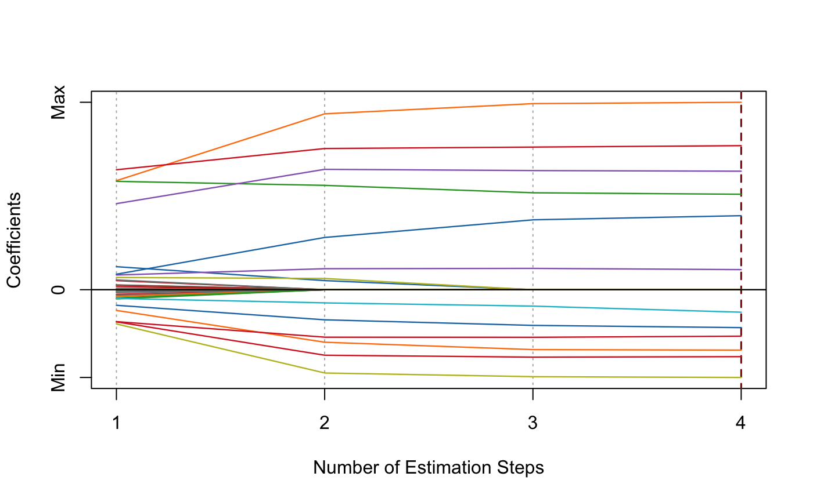

Multi-Step Adaptive Elastic-Net
msaenet( x, y, family = c("gaussian", "binomial", "poisson", "cox"), init = c("enet", "ridge"), alphas = seq(0.05, 0.95, 0.05), tune = c("cv", "ebic", "bic", "aic"), nfolds = 5L, rule = c("lambda.min", "lambda.1se"), ebic.gamma = 1, nsteps = 2L, tune.nsteps = c("max", "ebic", "bic", "aic"), ebic.gamma.nsteps = 1, scale = 1, lower.limits = -Inf, upper.limits = Inf, penalty.factor.init = rep(1, ncol(x)), seed = 1001, parallel = FALSE, verbose = FALSE )
| x | Data matrix. |
|---|---|
| y | Response vector if |
| family | Model family, can be |
| init | Type of the penalty used in the initial
estimation step. Can be |
| alphas | Vector of candidate |
| tune | Parameter tuning method for each estimation step.
Possible options are |
| nfolds | Fold numbers of cross-validation when |
| rule | Lambda selection criterion when |
| ebic.gamma | Parameter for Extended BIC penalizing
size of the model space when |
| nsteps | Maximum number of adaptive estimation steps.
At least |
| tune.nsteps | Optimal step number selection method
(aggregate the optimal model from the each step and compare).
Options include |
| ebic.gamma.nsteps | Parameter for Extended BIC penalizing
size of the model space when |
| scale | Scaling factor for adaptive weights:
|
| lower.limits | Lower limits for coefficients.
Default is |
| upper.limits | Upper limits for coefficients.
Default is |
| penalty.factor.init | The multiplicative factor for the penalty
applied to each coefficient in the initial estimation step. This is
useful for incorporating prior information about variable weights,
for example, emphasizing specific clinical variables. To make certain
variables more likely to be selected, assign a smaller value.
Default is |
| seed | Random seed for cross-validation fold division. |
| parallel | Logical. Enable parallel parameter tuning or not,
default is FALSE. To enable parallel tuning, load the
|
| verbose | Should we print out the estimation progress? |
List of model coefficients, glmnet model object,
and the optimal parameter set.
Nan Xiao and Qing-Song Xu. (2015). Multi-step adaptive elastic-net: reducing false positives in high-dimensional variable selection. Journal of Statistical Computation and Simulation 85(18), 3755--3765.
Nan Xiao <https://nanx.me>
dat <- msaenet.sim.gaussian( n = 150, p = 500, rho = 0.6, coef = rep(1, 5), snr = 2, p.train = 0.7, seed = 1001 ) msaenet.fit <- msaenet( dat$x.tr, dat$y.tr, alphas = seq(0.2, 0.8, 0.2), nsteps = 3L, seed = 1003 ) print(msaenet.fit)#> Call: msaenet(x = dat$x.tr, y = dat$y.tr, alphas = seq(0.2, 0.8, 0.2), #> nsteps = 3L, seed = 1003) #> Df %Dev Lambda #> 1 8 0.797121 1.219202e+15#> [1] 2 4 5 35 114 269 363 379#> [1] 5#> [1] 3#> [1] 2.839212